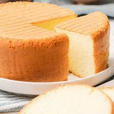

SPONGE CAKE RECIPES

how to make a sponge cake
Recipes are the most important aspect of baking
here are some of our processed information on Ingredients
Ingredients
- 1 Tbs of vanilla Extract
- 4 cups of purpose flour
- 1 Tbs of baking powder
- 2 cups of butter
- 10 eggs
- 2 cups of sugar
- preservative
- 1/2 Teaspoon of nutmeg
- 4 Tbs of powder milk in 1/2 cup of water
Steps
- grease your baking pan whit butter and dust with some flour then set it aside
- mix your flour, nutmeg and butter in a bowl and set aside as well.
- add 4 sticks of butter at (room temperature) together with sugar in the mixing bowl
and cream it together until it's smoothly fluffy and creamy.
- add the eggs one at a time mixing the egg into the cream after each addition
mix in the vanilla as well.
- Start alternating the addition of flour and milk until it;s well combined, pour the
the batter inside the baking pan and bake for 1hr 20 mins to 1 hr 40 mins.
- when it golden and caramelized on the edges
- insert a toothpick in the center of the cake if it comes out clean
- wait for some minutes to cool off the head and enjoy.